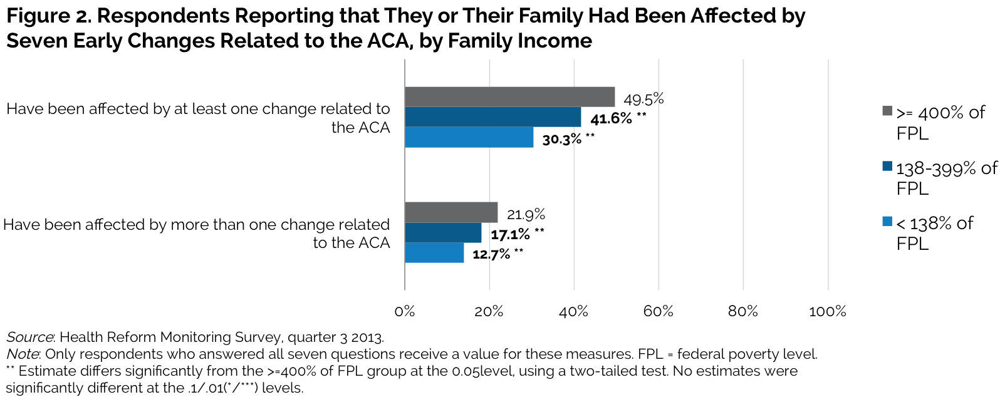

|
||||||||||||||||||||||||||||||||||||||||||||||||||||||||||||||||||||||||||||||||||||||||||||||||||||||||||||||||||||||||||||||||||||||||||||||||
Early ACA Market Reforms: Who Has Been Affected So Far?
Lisa Clemans-Cope, Bowen Garrett, Katherine Hempstead, and Nathaniel AndersonJanuary 21, 2014
Attention to the effects of the Patient Protection and Affordable Care Act (ACA) has largely focused on the rollout of the health insurance Marketplaces in late 2013 and the Medicaid expansions and Marketplace subsidies that took effect at the start of 2014. Yet the ACA includes many other changes and consumer protections in the private insurance market that began as early as September 2010. The goal of these early market reforms, many of which have received little attention, was to address coverage and benefit gaps in the pre-reform health insurance market. These include reforms ensuring that children with pre-existing conditions could gain stable coverage (often referred to as part of the so-called patients’ bill of rights) and expanded access to coverage for young adults. This brief explores whether the effects of the early market reforms have been felt on the ground by examining respondents’ reports of whether they or their families were affected by any of these early ACA provisions.
What We Did
This brief draws on data collected in September 2013 from a sample of nonelderly adults age 18–64 through the Health Reform Monitoring Survey (HRMS). The survey asked nonelderly adults whether they or their families had been affected by any of seven changes related to the health care reform law. The survey posed the following question: “Some of the changes under the health care law began in 2010. Have you or your family been affected by any of the following changes related to the health care law?” The seven changes, listed in table 1, are ACA market reforms in effect for health insurance plans or policy years beginning in 2010 or over the subsequent three years. Those with private health insurance coverage—both employer-sponsored insurance (ESI) and directly purchased coverage (also known as individual coverage)—are most likely to have been directly affected by these reforms.
Where polling data is available, we find that these provisions enjoy broad bipartisan support and public popularity. For example, according to the Kaiser Health Tracking Poll, in March 2013 a large majority of the public favors the law’s extension of dependent coverage to young adults, with 76 in favor; the provision requiring insurance companies to spend 80 percent of its premium revenues on health care services is also popular, with 60 percent of Americans in support (Kaiser Family Foundation 2013a). A New York Times/CBS poll showed similar support for those provisions in December 2013, and also showed that 86 percent of the public is in favor of the provision requiring insurance companies to cover those with pre-existing conditions.1
In this brief, we define lower-income families as those with incomes below 138 percent of the federal poverty level (FPL), which is the income cut-off for Medicaid eligibility in states opting for Medicaid expansion under the ACA. We define middle-income families as those with incomes between 138 and 400 percent of FPL, which is the income cut-off for eligibility for the subsidies available in Marketplace plans. We define higher-income families as those with incomes at or above 400 percent of FPL.
These survey data are limited because they are self-reports, and thus are vulnerable to over- and under-reporting. Respondents may not understand either the provisions of the ACA or the role it has played in their health care and health insurance experiences over the past few years.2
The overall finding that a large share of respondents report that they or their families have been affected by the ACA may appear at first glance to be at odds with previous studies such as the Kaiser Family Foundation Health Tracking Poll. That poll shows that a relatively small share, between about 11 and 19 percent, report that they or someone in their family has “personally benefited from the health reform law” (Kaiser Family Foundation 2013d). However, the results are not comparable because the HRMS question examined in this brief asks about individual provisions of the law, rather than the law overall.3
What We Found
Overall, as of September 2013, 41.3 percent of respondents say they or their families have been affected by at least one of seven early market reforms under the ACA, and 18.3 percent report being affected by more than one of the early ACA reforms (figure 1). The most frequently reported early market change is receiving a checkup or preventative care with no co-payment or coinsurance. Receiving a summary of health plan benefits and coverage rules is the second most commonly reported early market change, with 17.5 percent reporting such receipt. The provision allowing children under age 26 to stay on a parent’s health plan reportedly affected 13.4 percent. Birth control prescriptions without a co-payment or coinsurance were reportedly received by 9.3 percent. Slightly fewer than 5 percent of respondents say they received a rebate from an insurance company. Two other early market changes related to the ACA affect fewer people by design, but can have significant value for those affected: 1) eliminating restrictions on coverage due to pre-existing conditions for children (affecting 3.2 percent of respondents), and 2) removing lifetime or annual dollar limits on coverage (affecting 2.7 percent of respondents). A significant share of respondents indicated that they did not know whether they or their families were affected by these ACA-related changes; for each of the seven changes related to the ACA, between 12 percent and 21 percent of respondents are unsure, and 33.3 percent are unsure about at least one of the changes listed.4
Although individual provisions affected some age groups more than others, the overall percentage of respondents who have been affected by at least one provision, and the percentage affected by more than one provision, is constant across age groups (not shown).
Higher-income groups are more likely than middle- and lower-income groups to report that they or their families have been affected by at least one of the seven early market reforms under the ACA (figure 2). Of respondents in higher-income families, 49.5 percent report having been affected by at least one of these changes, compared with 41.6 percent of those in middle-income families and 30.3 percent of those in lower-income families. Those with higher incomes are also more likely to report having received more than one benefit. These patterns are largely because the early ACA changes affected primarily those already privately insured, who are more likely to have higher incomes. But even among the privately insured, those with higher incomes are more likely than those with lower incomes to report that they or their families have received at least one benefit because of the ACA. 
For specific provisions, the higher-income group is significantly more likely to report having received a checkup or preventive care without a co-payment or coinsurance, having been affected by the provision allowing children under age 26 to stay on a parent's health plan, and having received a summary of health benefit and coverage rules (table 2). Among women age 18–49 with private coverage (ESI or directly purchased coverage), 17.0 percent report having received birth control prescriptions without a co-payment or coinsurance (not shown).
Among respondents with private insurance, 49.0 percent report having been affected by at least one of the early market reforms under the ACA (figure 3). This share is similar whether that coverage was ESI or directly purchased. Likewise, we see no significant difference by private coverage type in the percentage who report having been affected by more than one change related to the ACA. A significant share of respondents with private insurance (17.7 percent) report having taken advantage of the provision allowing children under age 26 to stay on a parent’s health plan. Slightly larger shares report having received a checkup or preventive care without a co-payment or coinsurance, and having received a summary of health plan benefits and coverage rules (not shown).
Among those with directly purchased coverage, 11.3 percent report having received a rebate from an insurance company that did not spend 80 percent of insurance premiums on health care services, compared to 4.6 percent of those with ESI. This finding is consistent with the large number of consumers who received rebates, particularly in the market for directly purchased coverage.5
What It Means
While the most dramatic changes to private health insurance coverage took effect at the start of 2014 with the opening of the state-based Marketplaces, many provisions of the ACA began in September 2010. These early changes—which primarily protected consumers, closed gaps in coverage, and promoted access to primary care in private insurance markets—have already affected many consumers. We found that, as of September 2013, four in ten respondents say they or their families have been affected by at least one of seven early market reforms under the ACA, and about two in ten report having been affected by more than one reform. We also found that higher-income groups are more likely than middle- and lower-income groups to report that they or their families have been affected by at least one early market reform. And among those with directly purchased coverage, one in ten report having received a premium rebate from an insurance company that did not spend the ACA-required 80 percent of its premium revenues on health care services.
Each of the seven ACA-related provisions examined was intended to benefit a specific population. The provisions related to receiving checkups or preventive care and birth control without co-payments or coinsurance are intended to improve the quality, efficiency, and effectiveness of health care by improving access to services recommended by the US Preventive Services Task Force6and the Institute of Medicine (IOM)7. The provision allowing young adults to stay on a parent's health plan until age 26 increases access to health insurance to an age group with a relatively high rate of uninsurance. Indeed, it reportedly led to an estimated 2.5 million young adults gaining coverage by June 2011. And, while few families are likely to benefit from the provision prohibiting insurance companies from refusing to cover children with pre-existing conditions, these children are likely to have an urgent need for medical care and can benefit greatly from timely access to care.8 Those who benefit from the removal of lifetime or annual dollar limits on coverage constitute a small share of the population but are likely to have high medical needs. In contrast, a broad swath of consumers could be affected by the provision requiring insurance companies to spend 80 percent of its premium revenues on health care services—12.8 million enrollees in 2011 and 8.5 million enrollees in 2012 received rebates.9 This provision was intended to ensure that all plans offered in the health insurance markets provide a certain value to consumers relative to premiums paid. An even larger population is affected by the provision requiring insurers to offer a summary of benefits and coverage, intended to inform enrollees and aid comparison shopping across plans.10
To date, the effects of these provisions have accrued disproportionately to higher- and middle-income groups, largely because these groups are more likely to have had private coverage during the relevant period. With broad-based ACA changes such as coverage subsidies in the state-based marketplaces and Medicaid expansions starting in 2014, we should expect many more consumers, particularly lower-income consumers, to benefit. Aggressive outreach and the distribution of easily understood information about the provisions of the health reform law could potentially accelerate this trend.
References
Kaiser Family Foundation. 2013a. “Kaiser Health Tracking Poll: March 2013.” Menlo Park, CA: Kaiser Family Foundation.
Kaiser Family Foundation. 2013b. “Kaiser Health Tracking Poll: August 2013.” Menlo Park, CA: Kaiser Family Foundation.
Kaiser Family Foundation. 2013c. “Kaiser Health Tracking Poll: October 2013.” Menlo Park, CA: Kaiser Family Foundation.
Kaiser Family Foundation. 2013d. “Kaiser Health Tracking Poll: December 2013.” Menlo Park, CA: Kaiser Family Foundation.
Levitt, Larry, Karen Pollitz, Gary Claxton, and Anthony Damico. 2013. How Buying Insurance Will Change Under Obamacare. Menlo Park, CA: Kaiser Family Foundation.
About the Series
This brief is part of a series drawing on the Health Reform Monitoring Survey (HRMS), a quarterly survey of the nonelderly population that is exploring the value of cutting-edge Internet-based survey methods to monitor the Affordable Care Act (ACA) before data from federal government surveys are available. The briefs provide information on health insurance coverage, access to and use of health care, health care affordability, and self-reported health status, as well as timely data on important implementation issues under the ACA. Funding for the core HRMS is provided by the Robert Wood Johnson Foundation, the Ford Foundation, and the Urban Institute.
For more information on the HRMS and for other briefs in this series, visit www.urban.org/hrms.
About the Authors
Lisa Clemans-Cope is a senior research associate and Bowen Garrett is a senior fellow, and Nathaniel Anderson is a research assistant in the Urban Institute’s Health Policy Center. Katherine Hempstead is a senior program officer at the Robert Wood Johnson Foundation.
The authors gratefully acknowledge the suggestions and assistance of Genevieve Kenney, Michael Marazzi, Fiona Blackshaw, and Stephen Zuckerman.
Notes 1 “The New York Times/CBS News Poll,” New York Times/CBS News, accessed January 14, 2014 . 2 An additional limitation is that the survey reveals current health insurance coverage rather than coverage since 2010 (when the early provisions began). The insurance status of the respondents’ family members is also unknown. 3 This general question from the Kaiser Family Foundation Health Tracking Poll was followed by an open-ended question that asked respondents: “In what ways would you say you have benefited from the health reform law?” Analysis of the narrative responses to that open-ended question is not comparable to the analysis of the choice-based HRMS question in this brief. Also, the Kaiser survey’s question limited responses by asking only about the respondent’s experiences, rather than those of the respondent and his or her family. To examine responses to the Kaiser survey’s question, see Kaiser Family Foundation (2013c). 4 The share reporting “don’t know” is not surprising; about half of nonelderly adults report that “they don’t know enough about the health reform law to understand how it will impact them and their family,” according to Kaiser Family Foundation (2013b). 5 “The 80/20 Rule: Providing Value and Rebates to Millions of Consumers,” US Department of Health and Human Services, June 21, 2012; “The 80/20 Rule Delivers More Value to Consumers in 2012,” Centers for Medicare and Medicaid Services, June 20, 2013. 6 “USPSTF A and B Recommendations,” US Preventative Services Task Force, accessed January 14, 2013. 7 “Clinical Preventive Services for Women: Closing the Gaps,” Institute of Medicine, July 2011. Accessed January 15, 2014. 8 Research has also shown that insurer’s denial practices were common even recently, reflecting the fact that insurers were allowed to deny coverage to adults with pre-existing conditions until January 1, 2014. For example, Larry Levitt et al. (2013) show that 18% of applicants to the individual insurance market were denied coverage. 10 Timothy Jost. “Implementing Health Reform: The Summary of Benefits and Coverage,” Health Affairs Blog, February 9, 2012. |
||||||||||||||||||||||||||||||||||||||||||||||||||||||||||||||||||||||||||||||||||||||||||||||||||||||||||||||||||||||||||||||||||||||||||||||||

 |
 |
 |